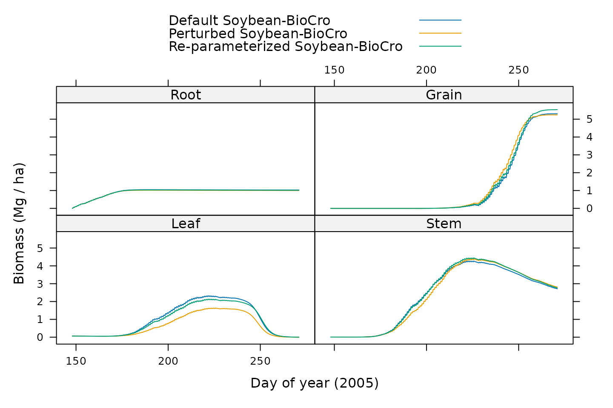

Parameterizing Soybean-BioCro
Source:vignettes/parameterizing_soybean_biocro.Rmd
parameterizing_soybean_biocro.RmdOverview
This article shows how to create an objective function that can be used to parameterize BioCro’s soybean model (Matthews et al. 2021; Lochocki et al. 2022).
Since the original publication of Soybean-BioCro, the BioCro module
library has undergone several changes, and the model has been
re-parameterized several times. These parameterizations did not use
BioCroValidation, since they were performed before
BioCroValidation was created.
However, BioCroValidation is able to re-create the
objective functions that were used for these parameterizations. Here, we
re-create the objective function that was used for the parameterization
included in version 3.2.0 of the BioCro R package.
In the commands below, we will use functions from several libraries, so we will load them now:
Building the Objective Function
In this section, we will use the objective_function
function from BioCroValidation package to create an
objective function that can be used to parameterize Soybean-BioCro. For
more details about this, please see the help page for
objective_function by typing
?objective_function from an R terminal.
The Base Model Definition
We first need a base model definition that includes the necessary modules, initial values, parameters, and differential equation solver specifications. For this example, we will simply use Soybean-BioCro as the base model, with just one small change: we will use an Euler solver rather than the default solver, which will help make the optimization run faster. For reasonable sets of parameter values, the Euler solver does not seem to cause any substantial errors when running Soybean-BioCro.
# Specify the base model definition
base_model_definition <- soybean
base_model_definition$ode_solver <- default_ode_solvers[['homemade_euler']]The Observed Data
The observed data needed to parameterize Soybean-BioCro is included
in the BioCroValidation package as the
soyface_biomass data set, which consists of two years (2002
and 2005) of biomass data and associated standard deviations, included
in four separate tables. However, each table requires some
pre-processing to get it ready.
One issue is that the data set specifies the doy of year (DOY) for each harvest, but we need to specify the time using BioCro’s convention (the number of hours since the start of the year).
Another issue is that the data set includes pod and seed values, but Soybean-BioCro calculates shell and seed masses, where the shell and seed together comprise the pod.
Although the observations do not include root biomass, it is nevertheless important to constrain the predicted root mass to reasonable values. To do this, it is assumed that the maximum root mass is seventeen percent of the maximum aboveground biomass, and that it is achieved at the same time as maximum above-ground biomass, based on observations reported in Ordóñez et al. (2020). In the observed data, the sum of stem and leaf mass is largest at the fifth time point in both years. So, root mass is estimated at this single time point and added to the observed values.
In previous parameterizations, a standard deviation for the root mass
was not explicitly estimated; instead, the standard-deviation-based
weight factor was implicitly set to 1. Because the
'logarithm' method with \(\epsilon = 10^{-5}\) was used, a weight
factor of 1 implies a standard deviation of \(1 / e - 10^{-5} \approx 0.3678694\). See
the documentation page (?objective_function) for more
information about this weighting method.
Finally, the data set includes some values that are not needed for
the parameterization. This includes the leaf litter accumulated between
each harvest, as well as the DOY and
Rep_Mg_per_ha columns that have been superseded by other
columns defined above.
Here we will define a helping function that can accomplish the required modifications described above; note that some operations are different depending on whether the table represents biomass values or standard deviations:
# Define a helping function for processing data tables
process_table <- function(data_table, type) {
# Define new `time` column
data_table$time <- (data_table$DOY - 1) * 24.0
# Define new `Shell_Mg_per_ha` column
data_table$Shell_Mg_per_ha <- if (type == 'biomass') {
# The shell is all parts of the pod other than the seed
data_table$Rep_Mg_per_ha - data_table$Seed_Mg_per_ha
} else {
# Add uncertainties in quadrature, a simple approach to error propagation
sqrt(data_table$Rep_Mg_per_ha^2 + data_table$Seed_Mg_per_ha^2)
}
# Define new `Root_Mg_per_ha` column, which has just one non-NA value
row_to_use <- 5 # Choose row to use
data_table$Root_Mg_per_ha <- NA # Initialize all values to NA
if (type == 'biomass') {
# Estimate a mass at one time point
col_to_add <- c(
'Leaf_Mg_per_ha',
'Stem_Mg_per_ha',
'Rep_Mg_per_ha'
)
data_table[row_to_use, 'Root_Mg_per_ha'] <-
0.17 * sum(data_table[row_to_use, col_to_add])
} else {
# Estimate standard deviation at one time point
data_table[row_to_use, 'Root_Mg_per_ha'] <- 1 / exp(1) - 1e-5
}
# Remove columns by setting them to NULL
data_table$DOY = NULL
data_table$Rep_Mg_per_ha = NULL
data_table$Litter_Mg_per_ha = NULL
# Return the processed table
data_table
}The Data-Driver Pairs
The BioCro R package includes weather data for the years
in the soyface_biomass data set. So now we are ready to
define the data-driver pairs, which includes the weather, the observed
biomass, the standard deviation of the observed biomass, and the weight
to assign to each year:
# Define the data-driver pairs
data_driver_pairs <- list(
ambient_2002 = list(
data = process_table(soyface_biomass[['ambient_2002']], 'biomass'),
data_stdev = process_table(soyface_biomass[['ambient_2002_std']], 'stdev'),
drivers = BioCro::soybean_weather[['2002']],
weight = 1
),
ambient_2005 = list(
data = process_table(soyface_biomass[['ambient_2005']], 'biomass'),
data_stdev = process_table(soyface_biomass[['ambient_2005_std']], 'stdev'),
drivers = BioCro::soybean_weather[['2005']],
weight = 1
)
)Here we have chosen equal weights for the two years.
The Post-Processing Function
The observed data includes values of the total litter, which is comprised of both leaf and stem litter. However, the model does not calculate this quntity; instead, it returns separate values of leaf and stem litter. To address this issue, we can provide a “post-processing function.” This is an (optional) function that is applied to each simulation result and can be used to add new columns. Here we define such a function, which adds a new column for the total litter:
# Define the post-processing function
post_process_function <- function(sim_res) {
# Calculate the total litter as the sum of leaf and stem litter
within(sim_res, {TotalLitter = LeafLitter + StemLitter})
}The Data Definitions
The data sets above have columns whose names do not match the
corresponding model outputs. For example, the
Leaf_Mg_per_ha column of the observed data must be compared
to the Leaf column of the model output, since both
represent the leaf mass per unit ground area. To handle this mismatch,
we can provide a set of “data definitions” that specify which columns
should be compared:
# Define the data definition list, where the element names are columns in the
# observed data tables, and the element values are the corresponding column
# names in the model outputs
data_definitions <- list(
# Observed Simulated
CumLitter_Mg_per_ha = 'TotalLitter',
Leaf_Mg_per_ha = 'Leaf',
Root_Mg_per_ha = 'Root',
Seed_Mg_per_ha = 'Grain',
Shell_Mg_per_ha = 'Shell',
Stem_Mg_per_ha = 'Stem'
)The Arguments to Vary
Here we wish to vary several parameters related to carbon partitioning for growth, senescence, maintenance respiration, and growth respiration:
For each growing tissue, there are two parameters (\(\alpha\) and \(\beta\)) that influence the parbon partitioning coefficients. Here we will vary these for the leaf, stem, and shell (6 parameters in total).
For each senescing tissue, there are three parameters (\(\alpha_{sen}\), \(\beta_{sen}\), and
rate) that influence when senescence begins and the overall rate of scenescence. Here we will vary these for the leaf and stem (6 parameters in total).For each growing tissue, there is one parameter (
grc) that influences the rate of carbon use for growth respiration. Here we will vary these for the stem and root (2 parameters in total).For each tissue, there is one parameter (
mrc) that influences the rate of carbon use for maintenance respiration. Here we will vary these for the leaf, stem, and root (3 parameters in total).
Together, this is 17 arguments to vary. Typically, an optimization
problem requires more time for each free parameter involved, so it is
helpful to vary the smallest possible set. One way to reduce the number
of free parameters is to treat some as being “dependent.” In other
words, to calculate the values of some parameters from the values of
others, so that only some of them are truly free or “independent.” Here
we will do this by fixing the value of mrc_stem to the
value of mrc_leaf. Thus, we can think of this is a single
maintenance respiration coefficient for the entire shoot; this reduces
the number of independent parameters by one (to 16).
The independent arguments must be specified as a list of named numeric elements, where the name is the argument name and the value is an initial guess for that argument. Here we will use the default Soybean-BioCro values as our initial guesses:
# Define a list of independent arguments and their initial values
independent_arg_names <- c(
# Partitioning for leaf, stem, and shell
'alphaLeaf',
'betaLeaf',
'alphaStem',
'betaStem',
'alphaShell',
'betaShell',
# Senescence for leaf and stem
'alphaSeneLeaf',
'betaSeneLeaf',
'rateSeneLeaf',
'alphaSeneStem',
'betaSeneStem',
'rateSeneStem',
# Growth respiration for stem and root
'grc_stem',
'grc_root',
# Maintenance respiration for leaf and root
'mrc_leaf',
'mrc_root'
)
independent_args <- soybean$parameters[independent_arg_names]The dependent arguments must be specified as a function that takes a list of independent arguments as its input, and returns a list of dependent arguments as its output:
# Define a function that sets `mrc_stem` to the value of `mrc_leaf`
dependent_arg_function <- function(ind_args) {
list(mrc_stem = ind_args[['mrc_leaf']])
}The Quantity Weights
When determining the error metric value, we wish to assign different
weights to each type of observed value. This can be handled via the
quantity_weights, which must be a list of named numeric
elements, where the name of each element is an output from the
simulation, and its value is the weight.
# Specify the quantity weights; there is no systematic way to determine these,
# but the following weights have worked well in the past for Soybean-BioCro
quantity_weights <- list(
Grain = 1.0,
Leaf = 1.0,
Root = 0.1,
Shell = 0.5,
Stem = 1.0,
TotalLitter = 0.1
)The Extra Penalty Function
Sometimes an optimizer may choose parameter values that produce close agreement with the observed data but are nevertheless unreasonable from a biological perspective.
To prevent these unreasonable parameters from being chosen, “extra
penalties” can be added to the error metric. These penalties can be
specified using an extra_penalty_function, which must take
the result from a BioCro simulation as its input and return a numeric
error penalty value, which generally should be zero (when no issues are
found) or a large positive number (if an issue has been found).
For Soybean-BioCro parameterization, three common issues are that:
Carbon is never partitioned to one or more key tissues.
Carbon partitioning to the stem and leaf starts at different times.
Carbon partitioning to the leaves begins too early or too late.
The function below will return a large value when any of these situations occurs, and will otherwise return a value of zero.
# Define an extra penalty function
extra_penalty_function <- function(sim_res) {
# Set the penalty value
PENALTY <- 9999
# Get the first times when each partitioning coefficient becomes non-zero
k_thresh <- 0.01 # Threshold k value to decide when growth has started
hpd <- 24.0 # Hours per day
time <- sim_res[['time']]
time_grain <- time[sim_res[['kGrain']] > k_thresh][1]
time_leaf <- time[sim_res[['kLeaf']] > k_thresh][1]
time_shell <- time[sim_res[['kShell']] > k_thresh][1]
time_stem <- time[sim_res[['kStem']] > k_thresh][1]
# Return a penalty if necessary
if (is.na(time_grain) | is.na(time_leaf) | is.na(time_shell) | is.na(time_stem)) {
# One or more tissues is not growing
return(PENALTY)
} else if (abs(time_leaf - time_stem) > 5 * hpd) {
# The starts of leaf and stem growth are more than 5 days apart
return(PENALTY)
} else if (time_leaf - time[1] > 20 * hpd | time_leaf - time[1] < 10 * hpd) {
# The start of leaf growth is too late (more than 20 days after sowing) or
# too early (fewer than 10 days after sowing)
return(PENALTY)
} else {
# No problems were detected
return(0.0)
}
}The Objective Function
Now we are just about ready to build the objective function. There are a few more details to discuss:
Soybean-BioCro has always used the
'mean_max'method for determining normalization factors; see Equations 14-16 of Matthews et al. (2021) for more details.Soybean-BioCro has always used the
'logarithm'method for determining weights from standard deviations with \(\epsilon = 10^{-5}\); see Equation 17 of Matthews et al. (2021) for more details.Soybean-BioCro has not used any regularization.
With this, it is possible to build the function. Note that some useful information is printed out when the function is created, such as the full list of observed values and their corresponding weights.
# Create the objective function
obj_fun <- objective_function(
base_model_definition,
data_driver_pairs,
independent_args,
quantity_weights,
data_definitions = data_definitions,
normalization_method = 'mean_max',
stdev_weight_method = 'logarithm',
stdev_weight_param = 1e-5,
regularization_method = 'none',
dependent_arg_function = dependent_arg_function,
post_process_function = post_process_function,
extra_penalty_function = extra_penalty_function
)
#>
#> The independent arguments and their initial values:
#>
#> List of 16
#> $ alphaLeaf : num 23.9
#> $ betaLeaf : num -18.1
#> $ alphaStem : num 24.8
#> $ betaStem : num -18.5
#> $ alphaShell : num 13.6
#> $ betaShell : num -9.98
#> $ alphaSeneLeaf: num 48.3
#> $ betaSeneLeaf : num -29.5
#> $ rateSeneLeaf : num 0.0122
#> $ alphaSeneStem: num 4.19
#> $ betaSeneStem : num -3.31
#> $ rateSeneStem : num 0.000117
#> $ grc_stem : num 0.0283
#> $ grc_root : num 0.0027
#> $ mrc_leaf : num 0.000488
#> $ mrc_root : num 1e-05
#>
#> The dependent arguments and their initial values:
#>
#> List of 1
#> $ mrc_stem: num 0.000488
#>
#> The full data definitions:
#>
#> List of 6
#> $ Leaf_Mg_per_ha : chr "Leaf"
#> $ Stem_Mg_per_ha : chr "Stem"
#> $ Seed_Mg_per_ha : chr "Grain"
#> $ CumLitter_Mg_per_ha: chr "TotalLitter"
#> $ Shell_Mg_per_ha : chr "Shell"
#> $ Root_Mg_per_ha : chr "Root"
#>
#> The user-supplied data in long form:
#>
#> $ambient_2002
#> time quantity_name quantity_value quantity_stdev time_index expected_npts
#> 1 4272 Leaf 0.1802843394 0.0408155501 649 3288
#> 2 4512 Leaf 0.5544619422 0.1638632739 889 3288
#> 3 4848 Leaf 1.3265529308 0.1337744335 1225 3288
#> 4 5184 Leaf 1.6979440069 0.2283266576 1561 3288
#> 5 5520 Leaf 1.8077427820 0.2024754215 1897 3288
#> 6 5880 Leaf 1.5788136482 0.0754751654 2257 3288
#> 7 6192 Leaf 0.9475377733 0.3445500325 2569 3288
#> 8 6888 Leaf 0.0000000000 0.0000000000 3265 3288
#> 9 4272 Stem 0.0852449694 0.0170797372 649 3288
#> 10 4512 Stem 0.4188538932 0.1384490248 889 3288
#> 11 4848 Stem 1.7110673664 0.1837107594 1225 3288
#> 12 5184 Stem 2.8928258965 0.4487440652 1561 3288
#> 13 5520 Stem 3.6859142604 0.4534474707 1897 3288
#> 14 5880 Stem 3.7452607171 0.2753213561 2257 3288
#> 15 6192 Stem 3.6184015745 0.1510453777 2569 3288
#> 16 6888 Stem 2.3057012247 0.1483892609 3265 3288
#> 17 4272 Grain 0.0000000000 0.0000000000 649 3288
#> 18 4512 Grain 0.0000000000 0.0000000000 889 3288
#> 19 4848 Grain 0.0000000000 0.0000000000 1225 3288
#> 20 5184 Grain 0.0000000000 0.0000000000 1561 3288
#> 21 5520 Grain 0.0000000000 0.0000000000 1897 3288
#> 22 5880 Grain 2.4803149604 0.3660583625 2257 3288
#> 23 6192 Grain 4.8468941378 0.5144215602 2569 3288
#> 24 6888 Grain 5.4133858263 0.1152608235 3265 3288
#> 25 4272 TotalLitter 0.0000000000 0.0000000000 649 3288
#> 26 4512 TotalLitter 0.0000000000 0.0000000000 889 3288
#> 27 4848 TotalLitter 0.0000000000 0.0000000000 1225 3288
#> 28 5184 TotalLitter 0.0000000000 0.0000000000 1561 3288
#> 29 5520 TotalLitter 0.3818897637 0.0456182275 1897 3288
#> 30 5880 TotalLitter 0.6633127734 0.0676627660 2257 3288
#> 31 6192 TotalLitter 0.9786377952 0.0320523860 2569 3288
#> 32 6888 TotalLitter 2.5831766621 0.2678295161 3265 3288
#> 33 4272 Shell 0.0000000000 0.0000000000 649 3288
#> 34 4512 Shell 0.0000000000 0.0000000000 889 3288
#> 35 4848 Shell 0.0003171479 0.0005493162 1225 3288
#> 36 5184 Shell 0.0793963255 0.0309899985 1561 3288
#> 37 5520 Shell 1.5545713035 0.2184025435 1897 3288
#> 38 5880 Shell 1.4956986001 0.6804094230 2257 3288
#> 39 6192 Shell 1.6977565178 0.9040650516 2569 3288
#> 40 6888 Shell 1.5955818021 0.1827578015 3265 3288
#> 45 5520 Root 1.1981988188 0.3678694412 1897 3288
#> norm w_var
#> 1 52.286943 3.1984472
#> 2 52.286943 1.8086619
#> 3 52.286943 2.0115255
#> 4 52.286943 1.4769342
#> 5 52.286943 1.5970874
#> 6 52.286943 2.5838191
#> 7 52.286943 1.0654869
#> 8 52.286943 11.5129255
#> 9 224.431645 4.0692772
#> 10 224.431645 1.9771808
#> 11 224.431645 1.6943383
#> 12 224.431645 0.8012803
#> 13 224.431645 0.7908538
#> 14 224.431645 1.2897800
#> 15 224.431645 1.8901088
#> 16 224.431645 1.9078489
#> 17 468.875938 11.5129255
#> 18 468.875938 11.5129255
#> 19 468.875938 11.5129255
#> 20 468.875938 11.5129255
#> 21 468.875938 11.5129255
#> 22 468.875938 1.0049352
#> 23 468.875938 0.6646928
#> 24 468.875938 2.1604709
#> 25 106.764827 11.5129255
#> 26 106.764827 11.5129255
#> 27 106.764827 11.5129255
#> 28 106.764827 11.5129255
#> 29 106.764827 3.0872287
#> 30 106.764827 2.6930715
#> 31 106.764827 3.4400717
#> 32 106.764827 1.3173673
#> 33 46.118035 11.5129255
#> 34 46.118035 11.5129255
#> 35 46.118035 7.4887956
#> 36 46.118035 3.4737681
#> 37 46.118035 1.5213696
#> 38 46.118035 0.3850459
#> 39 46.118035 0.1008429
#> 40 46.118035 1.6995388
#> 45 2.871361 1.0000000
#>
#> $ambient_2005
#> time quantity_name quantity_value quantity_stdev time_index expected_npts
#> 1 4104 Leaf 0.22227188 0.03289659 577 2952
#> 2 4440 Leaf 0.84603750 0.14679830 913 2952
#> 3 4776 Leaf 1.18446563 0.33807429 1249 2952
#> 4 5112 Leaf 2.21805938 0.15217591 1585 2952
#> 5 5448 Leaf 2.14744687 0.11907759 1921 2952
#> 6 5784 Leaf 1.51948125 0.51280870 2257 2952
#> 7 6120 Leaf 0.06575625 0.06168624 2593 2952
#> 8 6456 Leaf 0.00000000 0.00000000 2929 2952
#> 9 4104 Stem 0.18880312 0.01431814 577 2952
#> 10 4440 Stem 0.85220625 0.19883006 913 2952
#> 11 4776 Stem 1.61896875 0.60528625 1249 2952
#> 12 5112 Stem 4.04361563 0.55987405 1585 2952
#> 13 5448 Stem 4.47772500 0.30674464 1921 2952
#> 14 5784 Stem 3.89208750 0.37910849 2257 2952
#> 15 6120 Stem 2.89905000 0.22082398 2593 2952
#> 16 6456 Stem 2.17560000 0.24325473 2929 2952
#> 17 4104 Grain 0.00000000 0.00000000 577 2952
#> 18 4440 Grain 0.00000000 0.00000000 913 2952
#> 19 4776 Grain 0.00000000 0.00000000 1249 2952
#> 20 5112 Grain 0.00000000 0.00000000 1585 2952
#> 21 5448 Grain 0.00000000 0.00000000 1921 2952
#> 22 5784 Grain 3.02249063 0.34171478 2257 2952
#> 23 6120 Grain 3.99820312 0.39895675 2593 2952
#> 24 6456 Grain 4.96564688 0.50722409 2929 2952
#> 25 4104 TotalLitter 0.00000000 0.00000000 577 2952
#> 26 4440 TotalLitter 0.00000000 0.00000000 913 2952
#> 27 4776 TotalLitter 0.00000000 0.00000000 1249 2952
#> 28 5112 TotalLitter 0.06654375 0.06370846 1585 2952
#> 29 5448 TotalLitter 0.18230625 0.05624687 1921 2952
#> 30 5784 TotalLitter 0.33593438 0.07334289 2257 2952
#> 31 6120 TotalLitter 0.86697187 0.21417663 2593 2952
#> 32 6456 TotalLitter 1.14843750 0.24626746 2929 2952
#> 33 4104 Shell 0.00000000 0.00000000 577 2952
#> 34 4440 Shell 0.00000000 0.00000000 913 2952
#> 35 4776 Shell 0.00000000 0.00000000 1249 2952
#> 36 5112 Shell 0.29925000 0.16427520 1585 2952
#> 37 5448 Shell 2.30455312 0.43414807 1921 2952
#> 38 5784 Shell 2.51028750 0.68049551 2257 2952
#> 39 6120 Shell 1.37287500 0.65544843 2593 2952
#> 40 6456 Shell 1.40660625 0.81122149 2929 2952
#> 45 5448 Root 1.51805325 0.36786944 1921 2952
#> norm w_var
#> 1 78.716598 3.4140824
#> 2 78.716598 1.9186276
#> 3 78.716598 1.0844600
#> 4 78.716598 1.8826524
#> 5 78.716598 2.1278960
#> 6 78.716598 0.6678329
#> 7 78.716598 2.7855322
#> 8 78.716598 11.5129255
#> 9 320.800339 4.2455301
#> 10 320.800339 1.6152545
#> 11 320.800339 0.5020373
#> 12 320.800339 0.5800256
#> 13 320.800339 1.1817071
#> 14 320.800339 0.9699065
#> 15 320.800339 1.5103441
#> 16 320.800339 1.4136050
#> 17 394.522382 11.5129255
#> 18 394.522382 11.5129255
#> 19 394.522382 11.5129255
#> 20 394.522382 11.5129255
#> 21 394.522382 11.5129255
#> 22 394.522382 1.0737496
#> 23 394.522382 0.9188772
#> 24 394.522382 0.6787827
#> 25 21.102539 11.5129255
#> 26 21.102539 11.5129255
#> 27 21.102539 11.5129255
#> 28 21.102539 2.7532810
#> 29 21.102539 2.8778272
#> 30 21.102539 2.6124734
#> 31 21.102539 1.5409076
#> 32 21.102539 1.4012965
#> 33 100.824693 11.5129255
#> 34 100.824693 11.5129255
#> 35 100.824693 11.5129255
#> 36 100.824693 1.8061514
#> 37 100.824693 0.8343466
#> 38 100.824693 0.3849194
#> 39 100.824693 0.4224204
#> 40 100.824693 0.2092018
#> 45 4.608971 1.0000000
#>
#> The user-supplied quantity weights:
#>
#> List of 6
#> $ Grain : num [1:2] 1 1
#> $ Leaf : num [1:2] 1 1
#> $ Root : num [1:2] 0.1 0.1
#> $ Shell : num [1:2] 0.5 0.5
#> $ Stem : num [1:2] 1 1
#> $ TotalLitter: num [1:2] 0.1 0.1
#>
#> The user-supplied data-driver pair weights:
#>
#> List of 2
#> $ ambient_2002: num 1
#> $ ambient_2005: num 1
#>
#> The initial error metric terms:
#>
#> List of 2
#> $ terms_from_data_driver_pairs:List of 2
#> ..$ ambient_2002:List of 2
#> .. ..$ least_squares_terms:List of 6
#> .. .. ..$ Grain : num 0.00371
#> .. .. ..$ Leaf : num 0.0214
#> .. .. ..$ Root : num 0.00353
#> .. .. ..$ Shell : num 0.0115
#> .. .. ..$ Stem : num 0.0119
#> .. .. ..$ TotalLitter: num 0.00264
#> .. ..$ extra_penalty : num 0
#> ..$ ambient_2005:List of 2
#> .. ..$ least_squares_terms:List of 6
#> .. .. ..$ Grain : num 0.00744
#> .. .. ..$ Leaf : num 0.00742
#> .. .. ..$ Root : num 0.0053
#> .. .. ..$ Shell : num 0.0118
#> .. .. ..$ Stem : num 0.00345
#> .. .. ..$ TotalLitter: num 0.000304
#> .. ..$ extra_penalty : num 0
#> $ regularization_penalty : num 0
#>
#> The initial error metric value:
#>
#> [1] 0.09029496Optimizing the Parameter Values
The objective function is designed to be passed to a minimization algorithm, which will determine the argument values that produce the best agreement between the model predictions and the observations.
Soybean-BioCro has already been parameterized, so there is already good agreement between the model and the data. This can be seen by examining the value of the error metric when using the default Soybean-BioCro values:
# Evaluate the error function with default Soybean-BioCro parameters
default_error <- obj_fun(as.numeric(independent_args))This evaluates to 0.090295. This is a low value for a Soybean-BioCro parameterization, indicating that good agreement has already been found.
Here, as an example, we will intentionally change each parameter value by a small random amount, and then use an optimizer to improve the parameter values; in an ideal world, the optimizer will eventually pick parameter values close to the original Soybean-BioCro values.
There are many optimizers available in R. Base R includes the
optim function, and others are available from the
dfoptim and DEoptim packages. Here we will use
the nmkb optimizer from the dfoptim library,
which requires upper and lower bounds for each parameter and an initial
guess.
Choosing an Initial Guess
As mentioned above, we will intentionally choose a “bad” initial
guess by tweaking each parameter value by a small random amount. Note
that we set a seed to ensure the same result is obtained every time this
is performed. Also note that the initial guess must be a numeric vector,
where the elements are ordered as they are in
independent_args.
# Set a seed
set.seed(1234)
# Make an initial guess by perturbing the default values by a small amount
rel_size <- 0.02
initial_guess <- as.numeric(independent_args) *
(1.0 + runif(length(independent_args), -rel_size, rel_size))Even though the changes to parameter values are small, there is still a substantial change in the value of the error metric:
# Evaluate the error function with default Soybean-BioCro parameters
initial_error <- obj_fun(initial_guess)This evaluates to 0.1847518, which is about 51 percent larger than with the default parameter values.
Choosing Lower and Upper Bounds
There is not always a systematic approach to choosing lower and upper bounds for parameter values, but the following bounds have worked well for Soybean-BioCro in the past:
The \(\alpha\) parameters used in partitioning and senescence calculations are confined to the interval [0, 50].
The \(\beta\) parameters used in partitioning and senescence calculations are confined to the interval [-50, 0].
The senescence rates have a lower bound of zero, but have different upper bounds for each tissue.
The maintenance respiration coefficients are confined to the interval [1e-6, 1e-2].
The growth respiration coefficients must be positive and non-zero, but have different bounds for each tissue.
There are many possible ways to specify the bounds in R, but
ultimately they must be expressed as numeric vectors, where the elements
are ordered as they are in independent_args. Here we use
the bounds_table function from
BioCroValidation to create a data frame where the lower and
upper bounds are stored as columns. Later, the columns can be passed to
the optimizer. The bounds_table function will also check
the initial guess to ensure it lies within the bounds; for more
information about this function, see its help page by typing
?bounds_table from an R terminal.
# Specify some bounds
aul <- 50 # Upper limit for alpha parameters
bll <- -50 # Lower limit for beta parameters
mll <- 1e-6 # Lower limit for mrc parameters
mul <- 1e-2 # Upper limit for mrc parameters
# Define a table with the bounds in the same order as `independent_args`
bounds <- bounds_table(
independent_args,
list(
alphaLeaf = c(0, aul),
alphaStem = c(0, aul),
alphaShell = c(0, aul),
alphaSeneLeaf = c(0, aul),
alphaSeneStem = c(0, aul),
betaLeaf = c(bll, 0),
betaStem = c(bll, 0),
betaShell = c(bll, 0),
betaSeneLeaf = c(bll, 0),
betaSeneStem = c(bll, 0),
rateSeneLeaf = c(0, 0.0125),
rateSeneStem = c(0, 0.005),
mrc_leaf = c(mll, mul),
mrc_root = c(mll, mul),
grc_stem = c(8e-4, 0.08),
grc_root = c(0.0025, 0.075)
),
initial_guess
)Running the Optimizer
Now we will use an optimizer to improve on the initial guess. As
mentioned above, we will use the nmkb optimizer from the
dfoptim package. This is a good choice when a decent
starting guess is known. If a broader search is necessary,
DEoptim from the DEoptim package may be more
appropriate, although it generally needs more time to run.
To make sure this example does not take too much time, we will use a
loose tolerance; a more realistic example would probably use
1e-4 or 1e-5.
# Run the optimizer
optim_res <- nmkb(
initial_guess,
obj_fun,
bounds[['lower']],
bounds[['upper']],
control = list(
tol = 1e-2,
restarts.max = 10
),
debug_mode = FALSE # Passed to obj_fun; set to TRUE to enable debug mode
)When this document was generated, running the optimizer required the following amount of time:
#> user system elapsed
#> 82.471 0.298 82.778The total time was about 1.38 minutes. For a real parameterization problem, it can be many times longer, and may even need days to run on a personal laptop computer.
The optimizer also reports how many times the objective function was called, among other details:
str(optim_res)
#> List of 6
#> $ par : num [1:16] 23.9 -18.2 24.8 -18.4 13.5 ...
#> $ value : num 0.0921
#> $ feval : num 207
#> $ restarts : num 5
#> $ convergence: num 0
#> $ message : chr "Successful convergence"The value of feval is 207, so on average, each call of
the objective function required approximately 0.4 seconds.
Comparing Parameter Values
Let’s see whether the optimized parameters are closer to the default parameters than the initial guess was.
# Create a table of the various independent argument values
ind_arg_table <- data.frame(
arg_name = independent_arg_names,
defaults = as.numeric(independent_args),
initial_guess = initial_guess,
optimized = optim_res[['par']],
stringsAsFactors = FALSE
)
# Add differences
ind_arg_table <- within(ind_arg_table, {
initial_diff = abs(initial_guess - defaults)
optimized_diff = abs(optimized - defaults)
improved = optimized_diff < initial_diff
})
# View results
print(ind_arg_table)
#> arg_name defaults initial_guess optimized improved
#> 1 alphaLeaf 23.88950000 2.352036e+01 2.386565e+01 TRUE
#> 2 betaLeaf -18.08510000 -1.817357e+01 -1.817064e+01 TRUE
#> 3 alphaStem 24.82480000 2.493331e+01 2.479432e+01 TRUE
#> 4 betaStem -18.52140000 -1.861281e+01 -1.844565e+01 TRUE
#> 5 alphaShell 13.59550000 1.379177e+01 1.347693e+01 TRUE
#> 6 betaShell -9.98090000 -1.003692e+01 -1.000498e+01 TRUE
#> 7 alphaSeneLeaf 48.32000000 4.737195e+01 4.986793e+01 FALSE
#> 8 betaSeneLeaf -29.53930000 -2.922329e+01 -3.023728e+01 FALSE
#> 9 rateSeneLeaf 0.01219800 1.227904e-02 1.244641e-02 FALSE
#> 10 alphaSeneStem 4.19370000 4.196091e+00 3.889660e+00 FALSE
#> 11 betaSeneStem -3.31240000 -3.338050e+00 -3.387799e+00 FALSE
#> 12 rateSeneStem 0.00011700 1.172105e-04 1.274687e-04 FALSE
#> 13 grc_stem 0.02828000 2.803423e-02 2.844730e-02 TRUE
#> 14 grc_root 0.00270000 2.745731e-03 2.763255e-03 FALSE
#> 15 mrc_leaf 0.00048836 4.843030e-04 5.059738e-04 FALSE
#> 16 mrc_root 0.00001000 1.013492e-05 1.072817e-05 FALSE
#> optimized_diff initial_diff
#> 1 2.385246e-02 3.691373e-01
#> 2 8.554244e-02 8.847188e-02
#> 3 3.048061e-02 1.085089e-01
#> 4 7.574948e-02 9.140640e-02
#> 5 1.185710e-01 1.962730e-01
#> 6 2.408361e-02 5.601704e-02
#> 7 1.547928e+00 9.480466e-01
#> 8 6.979834e-01 3.160108e-01
#> 9 2.484111e-04 8.103559e-05
#> 10 3.040402e-01 2.390600e-03
#> 11 7.539867e-02 2.565007e-02
#> 12 1.046873e-05 2.104822e-07
#> 13 1.673041e-04 2.457718e-04
#> 14 6.325510e-05 4.573082e-05
#> 15 1.761377e-05 4.056985e-06
#> 16 7.281688e-07 1.349183e-07In this table, when the improved column is
TRUE, this means that the optimized parameter value is
closer to the default value than the initial guess was; in other words,
it means that the optimizer truly improved on the initial guess. In this
example, 7 out of 16 parameter estimates were improved (44 percent).
We can also compare the error metric to its original value. As shown above, it is now 0.0920539, which is only 1.9 percent larger than with the default parameter values.
The optimized parameter values could likely be improved by using a more stringent tolerance for the optimizer, but this would require more time to run.
Comparing Model Outputs
Another way to evaluate the results of the optimization is to compare simulations using the default, perturbed, and re-optimized versions of the model.
Following the re-parameterization, we now have new values of the
independent arguments, but this is not enough to actually run the new
version of the model. Thus, the next step is to form a new model
definition by updating the values of the default soybean model. This can
be accomplished using the update_model function from
BioCroValidation:
# Get model definition lists for the perturbed and re-parameterized versions of
# the soybean model
soybean_perturbed <- update_model(
BioCro::soybean,
independent_args,
initial_guess,
dependent_arg_function = dependent_arg_function
)
soybean_reparam <- update_model(
BioCro::soybean,
independent_args,
optim_res[['par']],
dependent_arg_function = dependent_arg_function
)We can check that the three models have different values of key
parameters, such as the “dependent” argument mrc_stem:
print(BioCro::soybean$parameters$mrc_stem)
#> [1] 0.00048836
print(soybean_perturbed$parameters$mrc_stem)
#> [1] 0.000484303
print(soybean_reparam$parameters$mrc_stem)
#> [1] 0.0005059738Now we can run each version of the model for a single year and visually compare their outputs:
# Define a helper function that runs a single model for the year 2005
run_2005 <- function(model_definition) {
with(model_definition, {run_biocro(
initial_values,
parameters,
soybean_weather[['2005']],
direct_modules,
differential_modules,
ode_solver
)})
}
# Run each model and combine the results
full_res <- rbind(
within(run_2005(BioCro::soybean), {model = 'Default Soybean-BioCro'}),
within(run_2005(soybean_perturbed), {model = 'Perturbed Soybean-BioCro'}),
within(run_2005(soybean_reparam), {model = 'Re-parameterized Soybean-BioCro'})
)
# Plot the results
xyplot(
Leaf + Stem + Root + Grain ~ fractional_doy,
group = model,
data = full_res,
type = 'l',
auto.key = list(space = 'top'),
xlab = 'Day of year (2005)',
ylab = 'Biomass (Mg / ha)'
)
Here we can see that while the simulated values for some tissues do not differ much between the models, there are large differences in other tissues; for these cases, the default and re-optimized versions are similar and the perturbed version is much different.
Saving the New Model Definition
A realistic parameterization takes a long time to complete, so it is
important to save the results for later use. One approach is to save the
model definition list using the save or
saveRDS functions from base R. However, these options
create binary files that are not human-readable, and they cannot be
easily tracked using git. As an alternative, the
BioCroValidation includes a function called
write_model that forms a string representing an R command
that can be called to re-create a model definition. This command string
can be written to a text file, making it easy to read and to track with
git.
Here we apply write_model to the re-optimized soybean
model:
# Convert the re-parameterized soybean model to an R command string
r_cmd_string <- with(soybean_reparam, write_model(
'soybean_reparam',
direct_modules,
differential_modules,
initial_values,
parameters,
ode_solver
))We can view the resulting R command string:
writeLines(r_cmd_string)
#> soybean_reparam <- list(
#> direct_modules = list(
#> "BioCro:format_time",
#> "BioCro:stomata_water_stress_linear",
#> "BioCro:sla_linear",
#> "BioCro:parameter_calculator",
#> "BioCro:soybean_development_rate_calculator",
#> "BioCro:leaf_water_stress_exponential",
#> "BioCro:partitioning_coefficient_logistic",
#> "BioCro:soil_evaporation",
#> "BioCro:solar_position_michalsky",
#> "BioCro:shortwave_atmospheric_scattering",
#> "BioCro:incident_shortwave_from_ground_par",
#> "BioCro:height_from_lai",
#> "BioCro:canopy_gbw_thornley",
#> "BioCro:stefan_boltzmann_longwave",
#> "BioCro:ten_layer_canopy_properties",
#> "BioCro:ten_layer_c3_canopy",
#> "BioCro:ten_layer_canopy_integrator",
#> "BioCro:no_leaf_resp_neg_assim_partitioning_growth_calculator",
#> "BioCro:senescence_coefficient_logistic",
#> "BioCro:carbon_assimilation_to_biomass"
#> ),
#> differential_modules = list(
#> "BioCro:senescence_logistic",
#> "BioCro:maintenance_respiration",
#> "BioCro:partitioning_growth",
#> "BioCro:two_layer_soil_profile",
#> "BioCro:development_index",
#> "BioCro:thermal_time_linear"
#> ),
#> ode_solver = list(
#> type = "boost_rkck54",
#> output_step_size = 1.000000,
#> adaptive_rel_error_tol = 1.000000e-04,
#> adaptive_abs_error_tol = 1.000000e-04,
#> adaptive_max_steps = 200
#> ),
#> initial_values = list(
#> "Leaf" = 0.06312,
#> "Stem" = 0.00789,
#> "Root" = 0.00789,
#> "Grain" = 1e-05,
#> "Shell" = 1e-05,
#> "LeafLitter" = 0,
#> "RootLitter" = 0,
#> "StemLitter" = 0,
#> "soil_water_content" = 0.32,
#> "cws1" = 0.32,
#> "cws2" = 0.32,
#> "DVI" = -1,
#> "TTc" = 0,
#> "Rhizome" = 1e-07,
#> "RhizomeLitter" = 0
#> ),
#> parameters = list(
#> "soil_air_entry" = -2.6,
#> "soil_b_coefficient" = 5.2,
#> "soil_bulk_density" = 1.35,
#> "soil_clay_content" = 0.34,
#> "soil_field_capacity" = 0.32,
#> "soil_sand_content" = 0.32,
#> "soil_saturated_conductivity" = 6.4e-05,
#> "soil_saturation_capacity" = 0.52,
#> "soil_silt_content" = 0.34,
#> "soil_wilting_point" = 0.2,
#> "iSp" = 3.5,
#> "Sp_thermal_time_decay" = 0,
#> "LeafN" = 2,
#> "LeafN_0" = 2,
#> "vmax_n_intercept" = 0,
#> "vmax1" = 110,
#> "alphab1" = 0,
#> "alpha1" = 0,
#> "maturity_group" = 3,
#> "Tbase_emr" = 10,
#> "TTemr_threshold" = 60,
#> "Rmax_emrV0" = 0.199,
#> "Tmin_emrV0" = 5,
#> "Topt_emrV0" = 31.5,
#> "Tmax_emrV0" = 45,
#> "Tmin_R0R1" = 5,
#> "Topt_R0R1" = 31.5,
#> "Tmax_R0R1" = 45,
#> "Tmin_R1R7" = 0,
#> "Topt_R1R7" = 21.5,
#> "Tmax_R1R7" = 38.7,
#> "sowing_fractional_doy" = 0,
#> "alphaLeaf" = 23.8656475358454,
#> "alphaStem" = 24.7943193862222,
#> "betaLeaf" = -18.1706424424747,
#> "betaStem" = -18.4456505196764,
#> "alphaRoot" = 36.967,
#> "betaRoot" = -40.1915,
#> "alphaShell" = 13.4769290411408,
#> "betaShell" = -10.0049836091908,
#> "kRhizome_emr" = 0,
#> "rsec" = 0.2,
#> "soil_clod_size" = 0.04,
#> "soil_reflectance" = 0.2,
#> "soil_transmission" = 0.01,
#> "specific_heat_of_air" = 1010,
#> "lat" = 40,
#> "longitude" = -88,
#> "atmospheric_pressure" = 101325,
#> "atmospheric_transmittance" = 0.6,
#> "atmospheric_scattering" = 0.3,
#> "par_energy_fraction" = 0.5,
#> "par_energy_content" = 0.219,
#> "heightf" = 6,
#> "min_gbw_canopy" = 0.005,
#> "dry_biomass_per_carbon" = 30.026,
#> "emissivity_sky" = 1,
#> "chil" = 0.81,
#> "k_diffuse" = 0.7,
#> "kpLN" = 0,
#> "leaf_reflectance_nir" = 0.42,
#> "leaf_reflectance_par" = 0.1,
#> "leaf_transmittance_nir" = 0.42,
#> "leaf_transmittance_par" = 0.05,
#> "lnfun" = 0,
#> "Gstar_c" = 19.02,
#> "Gstar_Ea" = 37830,
#> "Jmax_c" = 17.57,
#> "Jmax_Ea" = 43540,
#> "Kc_c" = 38.05,
#> "Kc_Ea" = 79430,
#> "Ko_c" = 20.3,
#> "Ko_Ea" = 36380,
#> "phi_PSII_0" = 0.352,
#> "phi_PSII_1" = 0.022,
#> "phi_PSII_2" = -0.00034,
#> "Rd_c" = 18.72,
#> "Rd_Ea" = 46390,
#> "theta_0" = 0.76,
#> "theta_1" = 0.018,
#> "theta_2" = -0.00037,
#> "Tp_c" = 19.77399,
#> "Tp_Ha" = 62990,
#> "Tp_Hd" = 182140,
#> "Tp_S" = 588,
#> "Vcmax_c" = 26.35,
#> "Vcmax_Ea" = 65330,
#> "jmax" = 195,
#> "jmax_mature" = 195,
#> "sf_jmax" = 0.2,
#> "electrons_per_carboxylation" = 4.5,
#> "electrons_per_oxygenation" = 5.25,
#> "tpu_rate_max" = 13,
#> "Rd" = 1.28,
#> "Catm" = 372.59,
#> "O2" = 210,
#> "b0" = 0.008,
#> "b1" = 10.6,
#> "Gs_min" = 0.001,
#> "windspeed_height" = 5,
#> "beta_PSII" = 0.5,
#> "leafwidth" = 0.1,
#> "growth_respiration_fraction" = 0,
#> "grc_stem" = 0.0284473040567858,
#> "grc_root" = 0.00276325510436536,
#> "mrc_leaf" = 0.000505973771827042,
#> "mrc_stem" = 0.000505973771827042,
#> "mrc_root" = 1.07281688473608e-05,
#> "mrc_grain" = 1e-05,
#> "retrans" = 0.9,
#> "retrans_rhizome" = 1,
#> "rateSeneLeaf" = 0.0124464110871913,
#> "rateSeneStem" = 0.000127468732965756,
#> "rateSeneRoot" = 0,
#> "rateSeneRhizome" = 0,
#> "alphaSeneLeaf" = 49.8679276606362,
#> "alphaSeneStem" = 3.88965982514793,
#> "alphaSeneRoot" = 10,
#> "alphaSeneRhizome" = 10,
#> "betaSeneLeaf" = -30.2372834250869,
#> "betaSeneStem" = -3.3877986715034,
#> "betaSeneRoot" = -10,
#> "betaSeneRhizome" = -10,
#> "remobilization_fraction" = 0.6,
#> "soil_depth1" = 0,
#> "soil_depth2" = 2.5,
#> "soil_depth3" = 10,
#> "wsFun" = 2,
#> "hydrDist" = 0,
#> "rfl" = 0.2,
#> "rsdf" = 0.44,
#> "phi1" = 0.01,
#> "phi2" = 1.5,
#> "tbase" = 10,
#> "km_leaf_litter" = 2,
#> "timestep" = 1
#> )
#> )It can also be written to a text file:
# Save the model definition as an R file in the current working directory
writeLines(r_cmd_string, './soybean_reparam.R')Commands From This Document
###
### Preliminaries
###
# Load required libraries
library(BioCroValidation)
library(BioCro)
library(dfoptim)
library(lattice)
###
### Prepare inputs for `objective_function`
###
# Specify the base model definition
base_model_definition <- soybean
base_model_definition$ode_solver <- default_ode_solvers[['homemade_euler']]
# Define a helping function for processing data tables
process_table <- function(data_table, type) {
# Define new `time` column
data_table$time <- (data_table$DOY - 1) * 24.0
# Define new `Shell_Mg_per_ha` column
data_table$Shell_Mg_per_ha <- if (type == 'biomass') {
# The shell is all parts of the pod other than the seed
data_table$Rep_Mg_per_ha - data_table$Seed_Mg_per_ha
} else {
# Add uncertainties in quadrature, a simple approach to error propagation
sqrt(data_table$Rep_Mg_per_ha^2 + data_table$Seed_Mg_per_ha^2)
}
# Define new `Root_Mg_per_ha` column, which has just one non-NA value
row_to_use <- 5 # Choose row to use
data_table$Root_Mg_per_ha <- NA # Initialize all values to NA
if (type == 'biomass') {
# Estimate a mass at one time point
col_to_add <- c(
'Leaf_Mg_per_ha',
'Stem_Mg_per_ha',
'Rep_Mg_per_ha'
)
data_table[row_to_use, 'Root_Mg_per_ha'] <-
0.17 * sum(data_table[row_to_use, col_to_add])
} else {
# Estimate standard deviation at one time point
data_table[row_to_use, 'Root_Mg_per_ha'] <- 1 / exp(1) - 1e-5
}
# Remove columns by setting them to NULL
data_table$DOY = NULL
data_table$Rep_Mg_per_ha = NULL
data_table$Litter_Mg_per_ha = NULL
# Return the processed table
data_table
}
# Define the data-driver pairs
data_driver_pairs <- list(
ambient_2002 = list(
data = process_table(soyface_biomass[['ambient_2002']], 'biomass'),
data_stdev = process_table(soyface_biomass[['ambient_2002_std']], 'stdev'),
drivers = BioCro::soybean_weather[['2002']],
weight = 1
),
ambient_2005 = list(
data = process_table(soyface_biomass[['ambient_2005']], 'biomass'),
data_stdev = process_table(soyface_biomass[['ambient_2005_std']], 'stdev'),
drivers = BioCro::soybean_weather[['2005']],
weight = 1
)
)
# Define the post-processing function
post_process_function <- function(sim_res) {
# Calculate the total litter as the sum of leaf and stem litter
within(sim_res, {TotalLitter = LeafLitter + StemLitter})
}
# Define the data definition list, where the element names are columns in the
# observed data tables, and the element values are the corresponding column
# names in the model outputs
data_definitions <- list(
# Observed Simulated
CumLitter_Mg_per_ha = 'TotalLitter',
Leaf_Mg_per_ha = 'Leaf',
Root_Mg_per_ha = 'Root',
Seed_Mg_per_ha = 'Grain',
Shell_Mg_per_ha = 'Shell',
Stem_Mg_per_ha = 'Stem'
)
# Define a list of independent arguments and their initial values
independent_arg_names <- c(
# Partitioning for leaf, stem, and shell
'alphaLeaf',
'betaLeaf',
'alphaStem',
'betaStem',
'alphaShell',
'betaShell',
# Senescence for leaf and stem
'alphaSeneLeaf',
'betaSeneLeaf',
'rateSeneLeaf',
'alphaSeneStem',
'betaSeneStem',
'rateSeneStem',
# Growth respiration for stem and root
'grc_stem',
'grc_root',
# Maintenance respiration for leaf and root
'mrc_leaf',
'mrc_root'
)
independent_args <- soybean$parameters[independent_arg_names]
# Define a function that sets `mrc_stem` to the value of `mrc_leaf`
dependent_arg_function <- function(ind_args) {
list(mrc_stem = ind_args[['mrc_leaf']])
}
# Specify the quantity weights; there is no systematic way to determine these,
# but the following weights have worked well in the past for Soybean-BioCro
quantity_weights <- list(
Grain = 1.0,
Leaf = 1.0,
Root = 0.1,
Shell = 0.5,
Stem = 1.0,
TotalLitter = 0.1
)
# Define an extra penalty function
extra_penalty_function <- function(sim_res) {
# Set the penalty value
PENALTY <- 9999
# Get the first times when each partitioning coefficient becomes non-zero
k_thresh <- 0.01 # Threshold k value to decide when growth has started
hpd <- 24.0 # Hours per day
time <- sim_res[['time']]
time_grain <- time[sim_res[['kGrain']] > k_thresh][1]
time_leaf <- time[sim_res[['kLeaf']] > k_thresh][1]
time_shell <- time[sim_res[['kShell']] > k_thresh][1]
time_stem <- time[sim_res[['kStem']] > k_thresh][1]
# Return a penalty if necessary
if (is.na(time_grain) | is.na(time_leaf) | is.na(time_shell) | is.na(time_stem)) {
# One or more tissues is not growing
return(PENALTY)
} else if (abs(time_leaf - time_stem) > 5 * hpd) {
# The starts of leaf and stem growth are more than 5 days apart
return(PENALTY)
} else if (time_leaf - time[1] > 20 * hpd | time_leaf - time[1] < 10 * hpd) {
# The start of leaf growth is too late (more than 20 days after sowing) or
# too early (fewer than 10 days after sowing)
return(PENALTY)
} else {
# No problems were detected
return(0.0)
}
}
###
### Create the objective function
###
# Create the objective function
obj_fun <- objective_function(
base_model_definition,
data_driver_pairs,
independent_args,
quantity_weights,
data_definitions = data_definitions,
normalization_method = 'mean_max',
stdev_weight_method = 'logarithm',
stdev_weight_param = 1e-5,
regularization_method = 'none',
dependent_arg_function = dependent_arg_function,
post_process_function = post_process_function,
extra_penalty_function = extra_penalty_function
)
###
### Use an optimizer to choose parameter values
###
# Set a seed
set.seed(1234)
# Make an initial guess by perturbing the default values by a small amount
rel_size <- 0.02
initial_guess <- as.numeric(independent_args) *
(1.0 + runif(length(independent_args), -rel_size, rel_size))
# Specify some bounds
aul <- 50 # Upper limit for alpha parameters
bll <- -50 # Lower limit for beta parameters
mll <- 1e-6 # Lower limit for mrc parameters
mul <- 1e-2 # Upper limit for mrc parameters
# Define a table with the bounds in the same order as `independent_args`
bounds <- bounds_table(
independent_args,
list(
alphaLeaf = c(0, aul),
alphaStem = c(0, aul),
alphaShell = c(0, aul),
alphaSeneLeaf = c(0, aul),
alphaSeneStem = c(0, aul),
betaLeaf = c(bll, 0),
betaStem = c(bll, 0),
betaShell = c(bll, 0),
betaSeneLeaf = c(bll, 0),
betaSeneStem = c(bll, 0),
rateSeneLeaf = c(0, 0.0125),
rateSeneStem = c(0, 0.005),
mrc_leaf = c(mll, mul),
mrc_root = c(mll, mul),
grc_stem = c(8e-4, 0.08),
grc_root = c(0.0025, 0.075)
),
initial_guess
)
# Run the optimizer
optim_res <- nmkb(
initial_guess,
obj_fun,
bounds[['lower']],
bounds[['upper']],
control = list(
tol = 1e-2,
restarts.max = 10
),
debug_mode = FALSE # Passed to obj_fun; set to TRUE to enable debug mode
)
###
### Check and record the new values
###
# Create a table of the various independent argument values
ind_arg_table <- data.frame(
arg_name = independent_arg_names,
defaults = as.numeric(independent_args),
initial_guess = initial_guess,
optimized = optim_res[['par']],
stringsAsFactors = FALSE
)
# Add differences
ind_arg_table <- within(ind_arg_table, {
initial_diff = abs(initial_guess - defaults)
optimized_diff = abs(optimized - defaults)
improved = optimized_diff < initial_diff
})
# View results
print(ind_arg_table)
# Get model definition lists for the perturbed and re-parameterized versions of
# the soybean model
soybean_perturbed <- update_model(
BioCro::soybean,
independent_args,
initial_guess,
dependent_arg_function = dependent_arg_function
)
soybean_reparam <- update_model(
BioCro::soybean,
independent_args,
optim_res[['par']],
dependent_arg_function = dependent_arg_function
)
# Define a helper function that runs a single model for the year 2005
run_2005 <- function(model_definition) {
with(model_definition, {run_biocro(
initial_values,
parameters,
soybean_weather[['2005']],
direct_modules,
differential_modules,
ode_solver
)})
}
# Run each model and combine the results
full_res <- rbind(
within(run_2005(BioCro::soybean), {model = 'Default Soybean-BioCro'}),
within(run_2005(soybean_perturbed), {model = 'Perturbed Soybean-BioCro'}),
within(run_2005(soybean_reparam), {model = 'Re-parameterized Soybean-BioCro'})
)
# Plot the results
xyplot(
Leaf + Stem + Root + Grain ~ fractional_doy,
group = model,
data = full_res,
type = 'l',
auto.key = list(space = 'top'),
xlab = 'Day of year (2005)',
ylab = 'Biomass (Mg / ha)'
)
# Convert the re-parameterized soybean model to an R command string
r_cmd_string <- with(soybean_reparam, write_model(
'soybean_reparam',
direct_modules,
differential_modules,
initial_values,
parameters,
ode_solver
))
# Save the model definition as an R file in the current working directory
writeLines(r_cmd_string, './soybean_reparam.R')